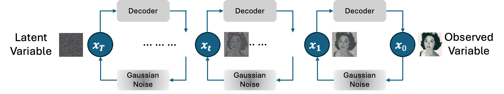
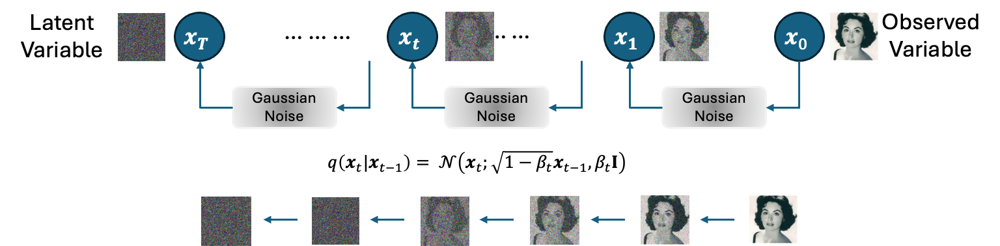
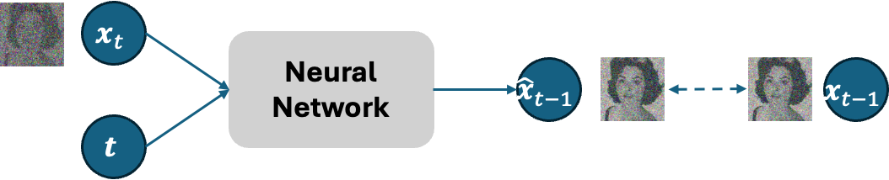
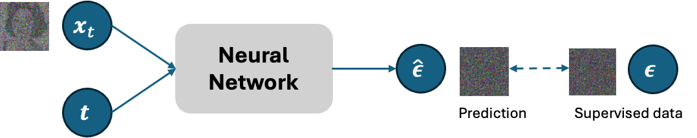
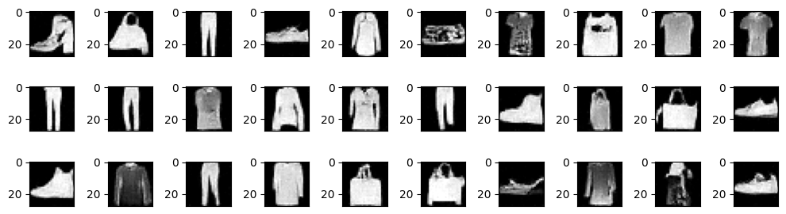

Denoising Diffusion Model#
The diffusion model is also a kind of latent variable model. It can also considered as a revolutionary version of the hierarchy VAE. However, with only the following changes in the hierarchy VAE, the diffusion model can be easily implemented but with surprisingly generative performance.
Latent and Observed variables have the same number of dimensions.
The encoder is just a (Gaussian) noise-adding module, where the noise is generated from a fixed normal distribution.

The basic idea of the diffusion model is to learn the distribution of observed data from the denoising process. The diffusion model’s two primary phases are diffusion and denoising.
In the diffusion process, the observed data is corrupted by repeatedly adding noise generated from a fixed normal distribution until it becomes a completely random noise.
Then, in the denoising process, a neural network learns to predict the noise added to the data, and with the denoising process, the data is restored (generated).
Diffusion Process#

In the diffusion process, noise is gradually added to the data from the previous time. The noise addition should be set so that at the final time the data is destroyed as latent variables. In general, the latent variable at the final step is assumed to follow a fixed normal distribution such as \(\mathcal{N}(x_T;0,\text{I})\). This is similar to the assumption in VAE where the latent variable is generated from a normal distribution.
The modeling of the diffusion process at each time step \(1\leq t \leq T\) is represented as follows.
If \(\beta_t\) is set to a small value such as 0.001 and \(T\) is set sufficiently large, the distribution of \(x_t\) can be made close to a normal distribution.
In fact, \(x_t\) can be obtained using the following variable transformation trick.
Denoising Phase#
In the denoising process, a neural network is used. In the diffusion model, all latent and observed variables have the same number of dimensions, so a common neural network can be used for denoising at each time point. Denoising can be modeled as follows.
Parameters Estimation#
Parameters estimation in a diffusion model is also performed by maximizing the log-likelihood function. In the diffusion model, the parameters are those of the neural network used in the denoising process. However, since it is difficult to compute the log-likelihood of a diffusion model, similar to the VAE, ELBO is used.
First, let’s calculate the ELBO of the diffusion model.
Here, since the last time step data is a complete noise which follow a normal distribution, \(p(x_T) \) is not a function of \(\theta\). Therefore, maximizing ELBO is equivalent to maximizing the following function.
\(\mathbb{E}_{q(x_{t-1}, x_t|x_0)}[\cdot]\) can be approximated with Monte Carlo method and together with the modeling of denoising process, this function can be further approximated as follows.

Maximizing this \(J(\theta)\) is equivalent to minimizing loss between \(x_{t-1}\) and denoised \(\hat{x}_{t-1}\). This means we train the neural network to conduct the denoising process given time step \(t\) and corresponding data \(x_t \) as inputs. However, as you may have noticed, each time of \(J(\theta)\) calculation, we need to do \(T\) times diffusion process sampling. This leads to high computational cost when we have large value of \(T\) set. To make the process more efficient, another method of approximation method can be considered by using only one sampling of the diffusion process.
Noise Prediction#
The idea of this method is to train the neural network in denoising process to predict the noise \(\hat\epsilon\)added to the data, instead of predicting the data \(\hat{x}_{t-1}\).

We will mathematical show that training the neural network to predict the noise is equivalent to the previous approximation with \(T\) times samplings in the previous section.
Note that the distribution \(p_\theta(x_{t-1}|x_t)\) can be modeled as
Let’s start from the modeling of the diffusion process.
Thus, \(x_t\) can be sampled as follows.
Now, we can express the original observed data \(x_0\) as
Given \(x_0\) and \(x_t\), the distribution of \(x_{t-1}\) can be obtained as follows.
With Markov assumption, \(q(x_t|x_{t-1},x_0) = q(x_t|x_{t-1})\)
By expanding the right side of this equation, we obtain the following distribution.
Here, let’s rewrite \(\mu_\theta(x_t,t)\) to match the form of \(\mu_q(x_t,x_0)\) as
, where now we set the output of the neural network to \(\epsilon_\theta(x_t, t)\) instead.
Now, let’s look back to the KL divergence between the two normal distributions \(q(x_{t-1}|x_t,x_0)\) and \(p_\theta(x_{t-1}|x_t)= \mathcal{N}(x_{t-1};\hat{x}_{t-1},\mathbf{I})\).
This shows that by train the neural network to predict the noise, which is minimizing the above KL divergence, lead to maximizing the EBOL of the diffusion model. Thus, this optimization is equivalent to the parameter estimation with \(T\) times sampling in the previous section.
To sum up, the training algorithm of the diffusion model is as follows.
Repeat the following steps
Repeat the following steps:
Randomly sample a training data instance
Sample a time step \(t\) from a uniform distribution : \(t \sim U[1,T]\)
Generate Gaussian noise for diffusion process: \(\epsilon \sim \mathcal{N}(0,\text{I})\)
Diffusion process: \(x_t = \sqrt{\bar\alpha_t}x_0 + \sqrt{1-\bar\alpha_t}\epsilon\)
Calculate loss: \(\text{Loss}(x_0, \theta) = \|\epsilon_\theta(x_t,t)-\epsilon\|^2\)
Update parameters \(\theta\) with gradient decent
Generating New Data#
As shown in previous sections, the denoising process is modeled as follows.
Using the following trick, we can sample every time step data with the following process.
Here,
. Thus, the process of new data generation can be summarized as follows.
Generation Process
\(x_T \sim \mathcal{N}(0,\text{I})\)
for \(t\) in \([T,...,1]\):
\(\epsilon\sim\mathcal{N}(0,\text{I})\)
if \(t=1\) then \(\epsilon=0\)
\(\sigma_q(t)=\sqrt{\frac{(1-\alpha_t)(1-\bar\alpha_{t-1})}{1-\bar\alpha_t}}\)
\(x_{t-1} = \frac{1}{\sqrt{\alpha_t}}\left(x_t - \frac{1-\alpha_t}{\sqrt{1-\bar\alpha_t}}\epsilon_\theta(x_t, t)\right) +\sigma_q(t)\epsilon\)
return \(x_0\)
